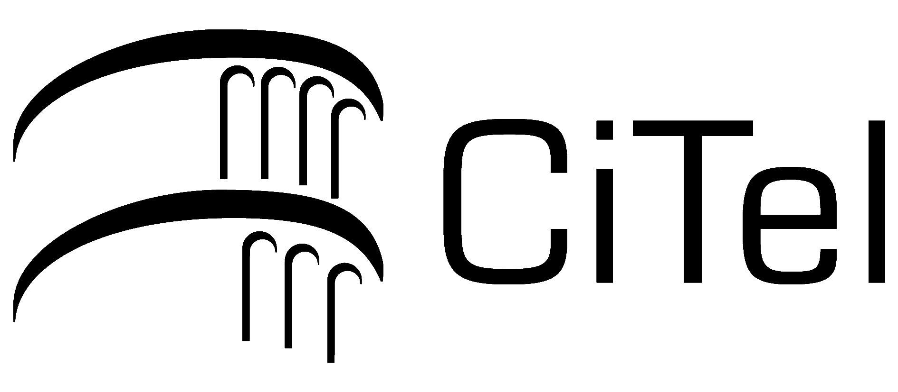
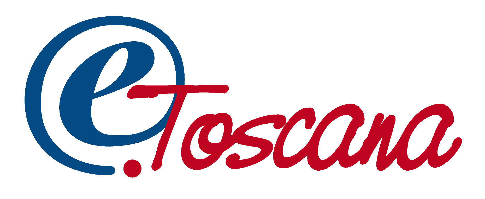

- CiTel: Ufficio Telematico per il Cittadino
-
- Nato nel contesto della Rete Telematica Regionale
Toscana
- Proposto nel 2002 nel contesto del multi-progetto
E-Toscana nella gara bandita dal Ministro per l'
Innovazione Tecnologica
- Costo totale circa 3.36 milioni di euro
- Leader: Comune di Pisa (Franco Chesi)
- Varie amministrazioni locali
- Vari partner tecnologici, tra cui: Regulus,
Cedaf, Elea, AGES,
Archimede
- Partner scientifico: Ufficio Italiano W3C
- Iniziato nel 2002, verrà completato a breve (estate
2005)
- http://www.e.pisa.it/
- Ha ricevuto vari riconoscimenti (PA Aperta 2004,
Cento Progetti al servizio dei Cittadini)
- Esempio di collaborazione fruttuosa tra Pubblica
amministrazione, Enti di Ricerca, imprese
private